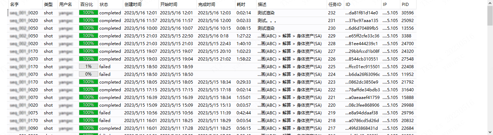
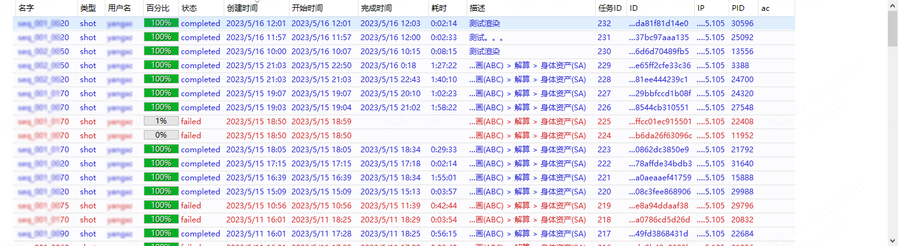
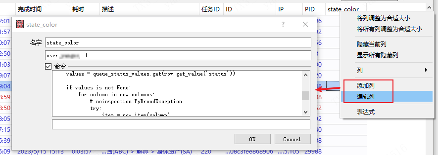
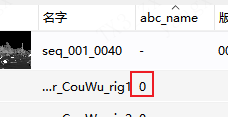

Xpipeline
config.ini
- 项目基础参数配置
- 所有参数将会自动添加到软件的环境变量中（如：maya）所有经启动器启动的软件都会继承公用这些环境变量
[system]
xp_maya_version=2020
xp_project_name=XX
xp_file_server_directory=\\file_server\data\projects
xp_local_drive=X:
xp_xpipeline_version=1.6.10
config.json
- 项目详细的全局性参数配置
环境变量
- 环境变量可在config.ini中定义
XP_STARTUP_OUTPUT_LOG_FILE
例如：\\server\log\startup.log
程序启动日志输出文件。（可定义到服务器公共、可写入的文件中）
自定义右键菜单
自定义列
自定义列,可根据项目具体需求方便、灵活扩展
- 可用户输入数据
- 自定义列命令(python)或者第三方数据、文档数据等，在列中显示
样例1：根据任务状态显示不同颜色
- 无颜色

- 根据任务状态显示不同颜色

- 创建列、并编辑代码

代码参考
queue_status_values = {
"completed": {9: [0, 0, .8, .8], 8: None},
"working": {9: [0, .8, 0, .8], 8: None},
"stop": {9: [.6, .6, .6, .8], 8: None},
"failed": {9: [.8, 0, 0, .8], 8: None},
}
def main(row):
values = queue_status_values.get(row.get_value('status'))
if values is not None:
for column in row.columns:
# noinspection PyBroadException
try:
item = row.item(column)
item.set_data(values)
except:
pass
return None
样例2：显示abc文件状态（文件是否存在）

import os
def main(row):
# row = xm.views.shot.ls()[0]
if row._data.get('type') != 'asset':
return "-"
else:
asset_name = row._data.get('name')
parent_row = row._items[0].parent().rowObj
asset_info = parent_row._data.get('source_data').get('export_cache').get('asset_info')
ani_abc = asset_info.get(asset_name).get('abc_ani_o')
return int(os.path.isfile(ani_abc))